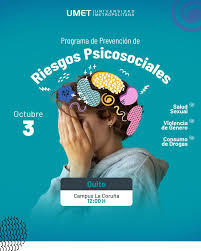
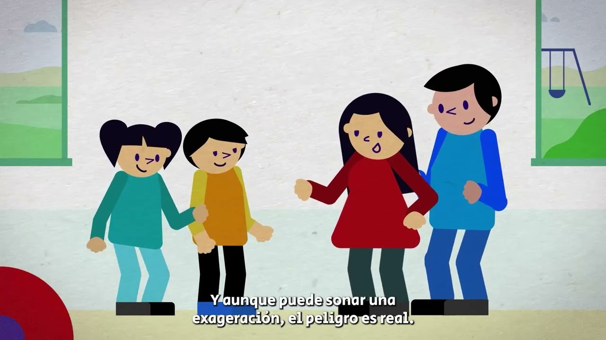

| Riesgos | Descripción |
|---|---|
| Estrés laboral o académico | Presión constante que puede afectar la salud mental y el desempeño. |
| Acoso o violencia | Maltrato físico, psicológico o verbal entre personas. |
| Inseguridad social | Robo, violencia o falta de confianza en el entorno. |

Prevención y Educación
Apoyo Psicológico
